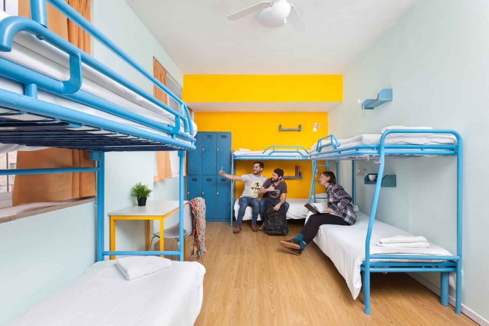

Uma das coisas mais importantes em um intercâmbio é o lugar em que você irá ficar, afinal, você vai morar em outra cidade por um determinado período, então é importante se sentir confortável com o ambiente escolhido. Por este motivo, nós da New Horizon separamos uma lista com os tipos de acomodações disponíveis para você ter a melhor experiência possível.

1. HOST FAMILY (CASA DE FAMÍLIA)
Nesse tipo de acomodação, você terá experiências no seu cotidiano, como aprimorar o seu idioma e o seu conhecimento cultual. Portanto, é uma ótima opção para quem busca estar em um ambiente mais caseiro, obtendo apoio e segurança. O estudante tem direito a um quarto individual ou compartilhado (conforme sua escolha), e refeições de meia-pensão, ou seja, café da manhã e jantar. As famílias são criteriosamente selecionadas e lhe ajudarão, dizendo o melhor caminho para a escola, locais turísticos, a realizar ligações telefônicas, verificar horário de ônibus e metro etc.
2. RESIDÊNCIA ESTUDANTIL
A residência estudantil normalmente fica dentro das dependências da escola ou em um local próximo. Neste tipo de acomodação, você divide o ambiente com outros estudantes, tendo que compartilhar as áreas comuns, como a cozinha, a sala e o banheiro. O estudante pode escolher entre ter um quarto compartilhado ou individual. Há vantagens nesse tipo de residência, pois você ficara em contato com outros pessoas de diversas culturas, além de poder praticar o novo idioma com mais frequência. Porém, se você é uma pessoa mais reservada e que não gosta de bagunças, a residência estudantil talvez não seja a acomodação certa pra você.
3. HOTEL
Hotel é um estabelecimento comercial em acomodações para viajantes: os alojamentos pagos a curto prazo não facilitam para o estudante o seu pagamento e sua locomoção, o aluno irá viver como um turista, não havendo contato com outros estudantes e nem a cultura local. Esse meio de hospedagem geralmente é classificado de uma a cinco estrelas, de acordo com o conforto, luxo e serviços oferecidos. A maioria dos hotéis também disponibilizam serviços de alimentação.